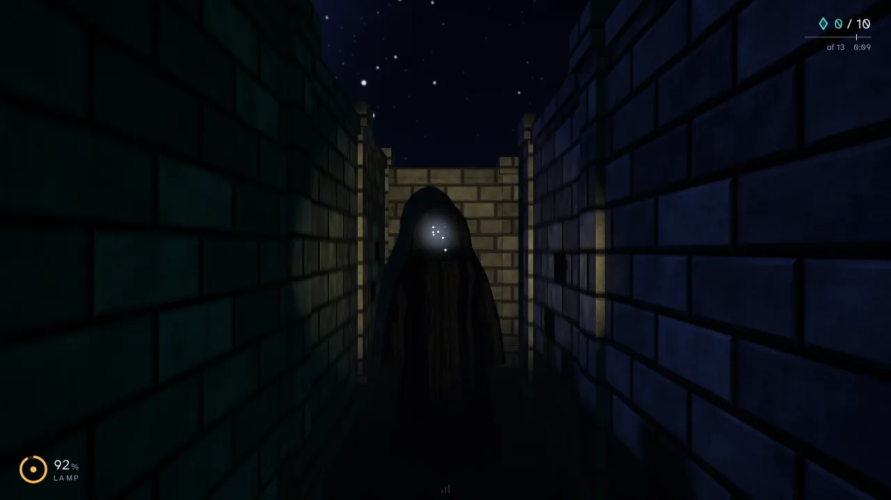
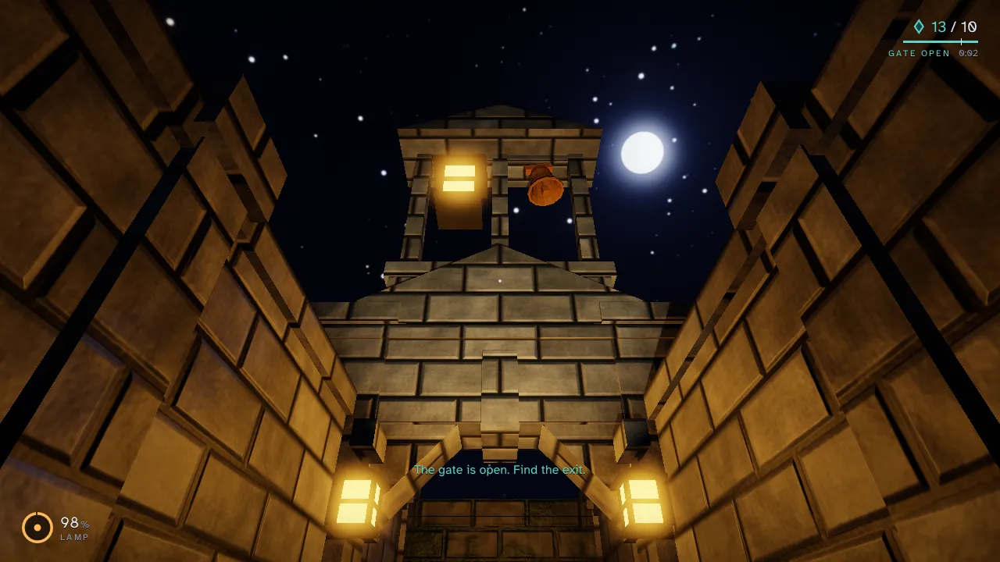
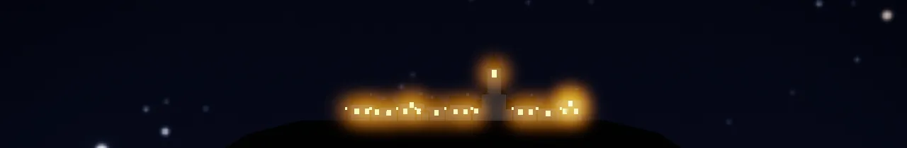
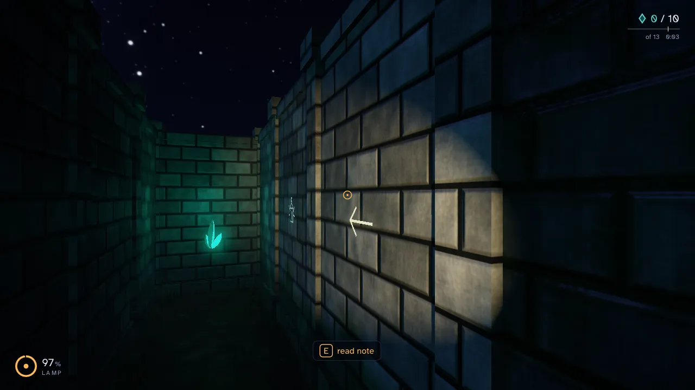
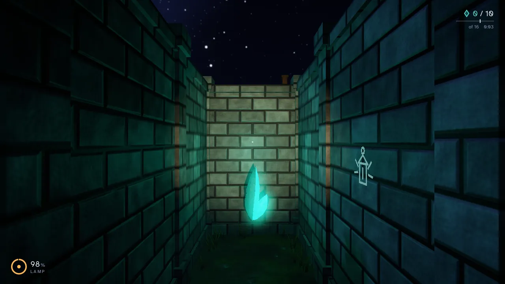
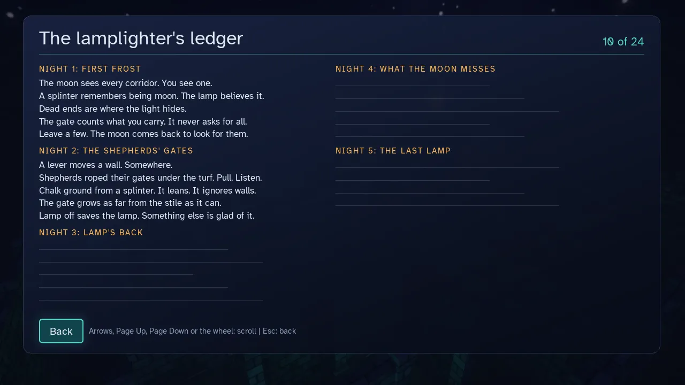
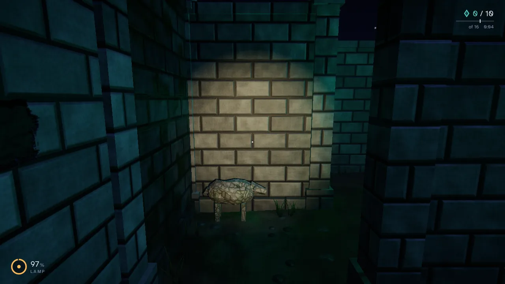
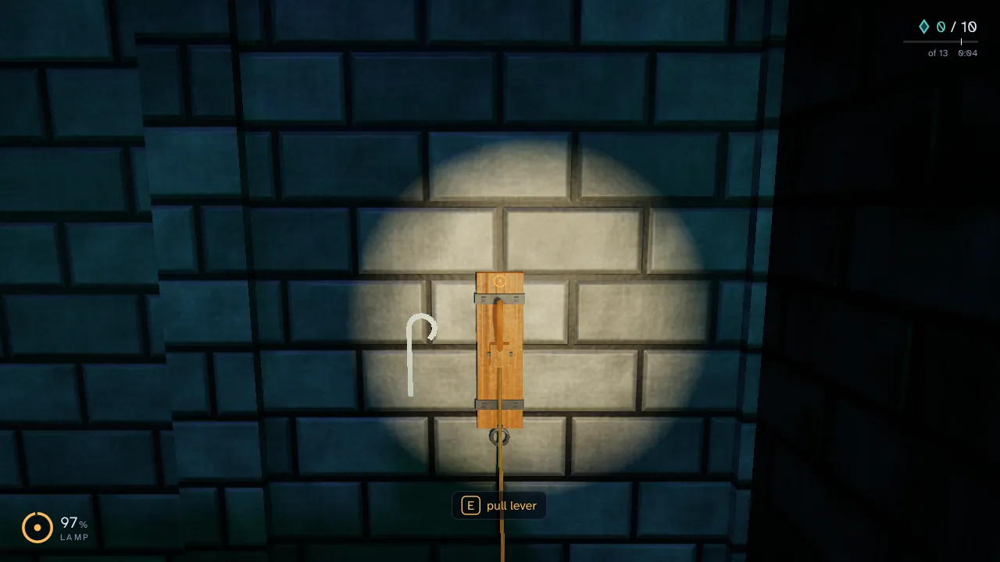
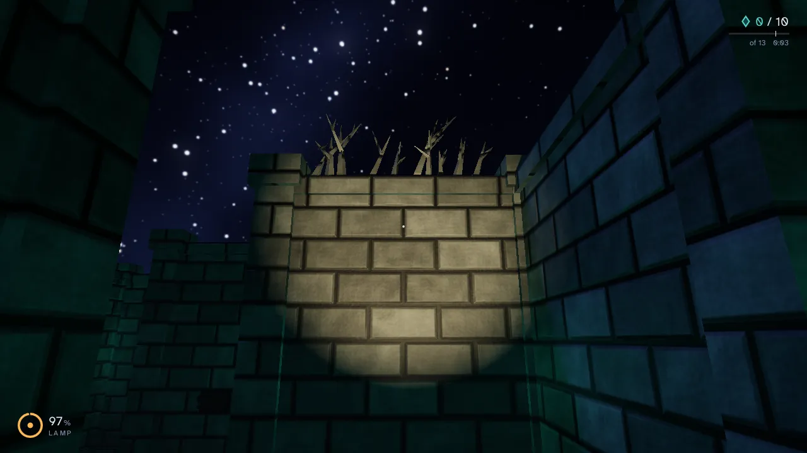

Keep the lamp lit.
You stand in a stone maze at night with a flashlight. Crystals lie in the corridors, each one a small sliver of the moon. Carry enough of them and the gate at the far end opens.
The lamp
The battery drains only while the light is on, and each crystal gives back a quarter of it. Under 20 % the light flickers. At zero it goes out until you find a crystal.
The gate
It opens by itself once you carry enough: 70 % of the crystals on the first three nights, 80 % on the last two. It never asks for all. Then its lanterns turn from cold blue to warm, and a bell tolls every 6 seconds.


The shadow
It wanders the maze and listens. It walks to the place of a noise, and when it sees you it runs: faster than you walk, slower than you sprint. While your beam is on it, it stands still. Hold the beam for 2.5 seconds and it is burned away for 20 seconds, at three times the battery.
How far it hears you, measured along the corridors, and how far it sees along a straight one.
If it reaches you it does not hurt you. It carries you back to the start and the night begins again. No clock runs against you, and in free play a switch called Calm night takes the shadow out of the maze.
Tonight's hedge
In the game, one maze a day takes the date as its seed, so every player walks the same hedge that day. This one is a sketch of the idea, drawn by this page from your date. It is not the maze the game makes, and it is a calm night: nothing hunts you here.
Your pointer is the lamp. It can only go where its light already falls. The arrow keys walk it too, and on a phone you tap a lit cell.
- The date
- Today
- The seed
- The date
- Crystals, of 26
- 0 / 19
The hedge needs JavaScript to grow.
Five nights, and a village to light.
Each night is a bigger maze with a shorter battery. When you win one, the camera rises over the gate and turns to the village on the far ridge, and more of its windows are lit.

- Night 1First Frost10 x 10The near lamps are lit. The village slept a little.
- Night 2The Shepherds' Gates13 x 13The lane is lit as far as the well.
- Night 3Lamp's Back16 x 16It followed you to the gate and stopped at the lamplight.
- Night 4What the Moon Misses19 x 19Lamps to the edge of the village. One window still dark.
- Night 5The Last Lamp22 x 22Every lamp in the village has its splinter now.
The size of each maze in cells, the line the game shows when you win the night (for the fifth, the first line of the ending card), and the windows and lamps that night lights in the village. The first night has no shadow, so you can learn the walk.
Small things in the hedge






How I make it
I write Night Maze to learn how real time graphics work. It began as a university project and I kept going.
There is no game engine underneath. The lighting, the shadows, the fog and the glow are written by hand on top of OpenGL. Small libraries do the window, the math, the menus and the sound.
- C++20
- On OpenGL 4.1, core profile: Blinn-Phong lighting, two shadow maps, HDR with ACES tone mapping, bloom and fog.
- 1000+
- More than 1000 test cases. The rules are plain structs and free functions that touch no window, file or clock, so they are tested without one.
- 15
- Blender scripts build the models, from the gatehouse to the stone sheep. A loader of my own reads them.
- 23
- Sounds, computed by a script from sine waves and noise. The menu theme is computed too: a piano, soft strings and a music box.
Get it
Download the launcher from its latest release. Windows 10 or 11, 64 bit, only for now.
Run the installer. It is not signed with a paid certificate, so Windows shows “Windows protected your PC”. Click “More info”, then “Run anyway”.
The launcher downloads the game, keeps it up to date and starts it.
Free. It needs a graphics card and driver with OpenGL 4.1. The installer asks for no administrator rights.
Before you install
Night Maze is a university project that I keep working on to learn OpenGL. It changes a lot, and things will break here and there. Expect rough edges and breaking changes between versions.
I have run the launcher by hand on one Windows 11 PC, and nowhere else. The numbers of the five nights are not balanced by many players yet.